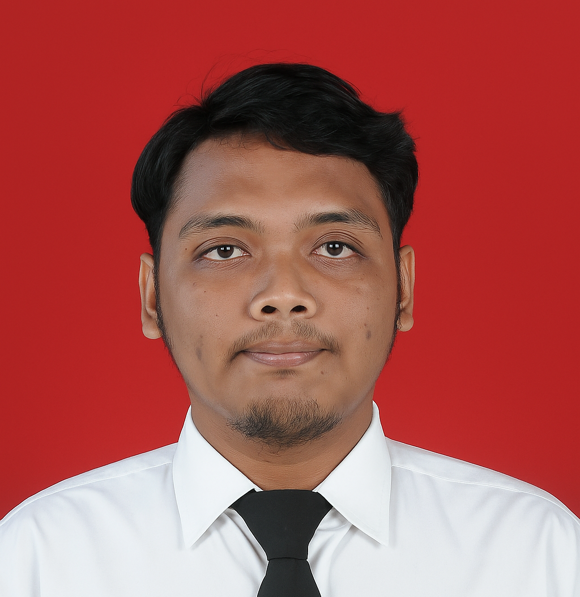

Email: ardiansyahfikriw@telkomuniversity.ac.id
WhatsApp: +62 851-7412-0669
Instagram: @aru.fw_
GitHub: github.com/ShinAruu22
LinkedIn: linkedin.com/in/username
Mahasiswa Sistem Informasi dengan minat pada pengembangan perangkat lunak, manajemen basis data, dan desain UI/UX. Terbiasa memecahkan masalah teknis dan membangun purwarupa aplikasi.